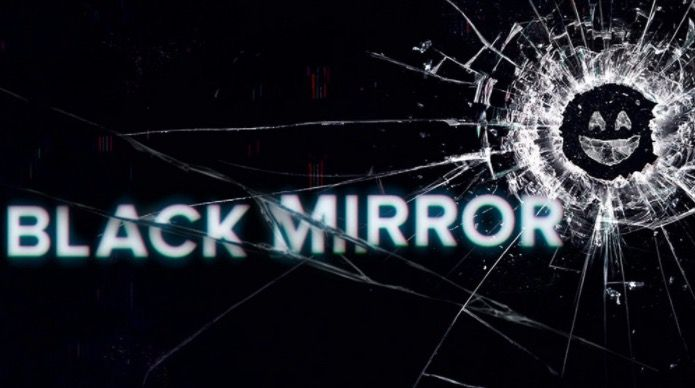

I denna serien är varje avsnitt ensamstående och huvudämnet är alltid någon form av teknik. Så man får alltid introduceras för nya karaktärer och med en ny story. Oftast börjar varje avsnitt med att människan har tagit fram en ny stor teknisk uppfinning och att det används i ett positivt syfte. Men trots att syftet är bra så har det alltid en baksida, till exempel en negativ påverkan på folk som använder tekniken. Att varje avsnitt alltid försöker lyfta fram det eventuellt negativa som kan komma ur många tekniska uppfinningar tycker jag är väldigt intressant och det som gör att serien sticker ut på ett sätt som verkligen höjer den.
